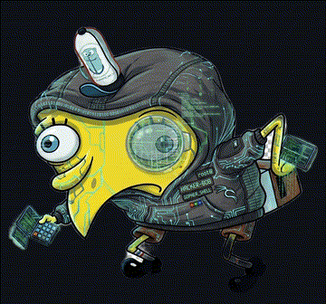

AI
The big shift
SECURITY IS BECOMING AGENTIC
Attack and defense are moving from fixed scripts to systems that observe, decide, use tools, and adapt.

Hacker BobArchitecture briefing
A simple explanation of the agents, pipeline, MCP memory, and evidence flow behind Bob.
Scan this first
Repo, install command, release notes, issues, and source code are all here.

github.com/vmihalis/hacker-bob
First principle
Ethical hacking is hacking with permission.
Same technical curiosity. Different contract, boundaries, evidence handling, and disclosure path.
Rules of engagement
Only test targets, accounts, and methods that are explicitly allowed.
Respect program limits, rate limits, data rules, and third-party boundaries.
Collect the proof needed, redact sensitive data, and report responsibly.
Bug bounty basics
A company publishes scope, rules, rewards, and a report form. You test only the allowed assets and submit reproducible evidence.
Read the scope before touching anything.
Test carefully and avoid real user harm.
Report proof that someone can reproduce.
Wait for triage, fix, and reward decisions.
Threat landscape: April 2026
The attack surface is moving faster than static playbooks.
This month alone: software supply chain compromise, stolen SaaS tokens, OAuth abuse, active zero-days, and critical infrastructure intrusion disclosures.
Recent incidents: supply chain
Official SAP-related packages were compromised to steal developer and cloud credentials.
A malicious npm delivery path briefly distributed a backdoored CLI package.
Stolen third-party integration tokens drove data-theft attempts against customer accounts.
Recent incidents: enterprise and data
A third-party AI/OAuth integration became a route into internal systems and customer data exposure.
The utility technology firm disclosed unauthorized access to internal systems.
Public breach reports included reservation data exposure and a 1M-member fitness breach.
Recent incidents: impact demonstration
April reporting included active impact demonstration around Fortinet EMS, Microsoft Defender, Windows Shell, LiteLLM, Qinglong, cPanel/WHM, and WordPress plugin backdoors.
The big shift
Attack and defense are moving from fixed scripts to systems that observe, decide, use tools, and adapt.
Agent-assisted attacks
The attacker loop is becoming agent-assisted.
Not just static scripts: operators now use AI to research, plan, generate lures, test infrastructure, triage data, and adapt faster.
Why this changes defense
Agents decide what to try next.
Observe the target.
Choose the next test.
Call tools.
Adapt from results.
Sources checked Apr 30, 2026
The problem
Bug bounty evaluating is not one task.
It is surface-discovery, auth, testing, chaining, verifying, collecting evidence, grading, and writing.
One sentence
Bob turns the evaluate into a state machine with receipts.
Every phase leaves structured evidence behind.
Architecture in three layers
The human starts, resumes, checks, and debugs Bob.
The root skill chooses the next phase and starts agents.
The local server owns state, findings, evidence, and telemetry.
Layer 1
The operator does not manage every file. They use simple Claude Code commands.
/bob-evaluate target.com /bob-evaluate resume target.com /bob-status /bob-debug /bob-egress
Read the current session state.
Decide the next phase.
Spawn the right specialist agent.
Wait for structured output.
Layer 2
It does not do random target testing. It delegates work and keeps the run on rails.
Layer 3
MCP is Bob's memory and rulebook.
The local `bountyagent` server validates tools, writes artifacts, enforces phase gates, and records telemetry.
Context strategy
Long runs can drown the model.
Surface-discovery data, traffic, auth, findings, retries, dead ends, and evidence can quickly become too much for one chat to carry.
Context strategy
Bob keeps memory outside the chat.
The chat coordinates. MCP stores. Agents receive only the slice they need.
Context strategy
Enough detail to test one target area well.
Enough detail to replay and challenge findings.
Enough detail to write from verified evidence.
Context strategy
Bob does not paste the whole session. It builds a compact brief from MCP state.
{
"assigned_surface": "API-1",
"auth_hint": "attacker + victim",
"coverage_summary": "2 tested, 1 promising",
"traffic_hints": ["/api/invoices/:id"],
"dead_ends": ["/old-login"],
"ranking_reason": "auth + object IDs"
}
{
"target": "example.com",
"phase": "EVALUATE",
"evaluation_wave": 2,
"pending_wave": null,
"auth_status": "attacker_and_victim",
"total_findings": 1
}
Context strategy
If the chat stops, Bob can read the session state and continue from the right place.
The whole run
Pipeline step
Bob builds the map before anyone starts testing.
Phase 1: SURFACE_DISCOVERY
Surface-discovery finds attack surfaces and gives each one a stable ID.
{
"target": "example.com",
"surfaces": [
{
"id": "API-1",
"type": "api",
"url": "https://api.example.com",
"priority": "HIGH",
"hints": ["auth", "object_ids"]
}
]
}
Pipeline step
Bob tries to get useful testing identities.
Phase 2: AUTH
Bob tries to get useful accounts.
Attacker and victim profiles let Bob test access control with contrast instead of guessing.
Network visibility
HTTP scans go through MCP, which writes redacted audit metadata and egress information.
{
"method": "GET",
"url": "https://api.example.com/api/...",
"status": 200,
"auth_profile": "attacker",
"egress_profile": "default",
"egress_profile_identity_hash": "..."
}
Egress control
Bob does not silently rotate networks.
Session state binds the chosen egress profile identity; route drift fails closed, while same-route credential rotation is allowed.
Pipeline step
Specialist agents test assigned surfaces in waves.
Phase 3: EVALUATE
One evaluator gets one surface. That keeps parallel testing focused.
MCP writes wave assignments.
Agents test in background.
MCP updates session state.
JSON example
This tells Bob what happened to the assigned surface.
{
"wave": "w1",
"agent": "a2",
"surface_id": "API-1",
"surface_status": "promising",
"findings": ["F-1"],
"lead_surface_ids": ["WEB-3"],
"dead_ends": ["/old-login"]
}
{
"surface_id": "API-1",
"endpoint": "/api/invoices/123",
"bug_class": "idor",
"auth_profile": "attacker",
"status": "tested",
"notes": "Victim invoice blocked"
}
JSON example
Bob records what was tested, blocked, promising, or needs auth.
JSON example
It is not a report yet. It is a candidate that must survive chaining and verification.
{
"id": "F-1",
"title": "Invoice IDOR",
"severity": "HIGH",
"surface_id": "API-1",
"auth": "attacker_vs_victim",
"evidence": "Attacker can read victim invoice"
}
Pipeline step
Bob checks whether separate signals combine into stronger impact.
Phase 4: CHAIN
Bob asks: can this become worse?
The chain-builder tests whether findings, auth context, traffic, and handoff notes combine into stronger impact.
{
"id": "C-1",
"finding_ids": ["F-1", "F-2"],
"hypothesis": "IDOR exposes billing data",
"outcome": "confirmed",
"impact": "Victim invoice and plan data readable"
}
JSON example
Confirmed, denied, blocked, and not-applicable outcomes all matter.
Pipeline step
Bob tries to kill weak bugs before they reach the report.
Phase 5: VERIFY
Bob argues with itself before it writes anything report-like.
Verification system
Skeptical replay. Deny weak proof and downgrade loose severity.
Review brutalist decisions for false negatives and over-corrections.
Re-run reportable survivors with fresh requests before evidence collection.
JSON example
Only final reportable findings move into evidence collection.
{
"round": "final",
"results": [
{
"finding_id": "F-1",
"status": "confirmed",
"reportable": true,
"confidence": "high"
}
]
}
Evidence
A report needs receipts.
Bob collects bounded, redacted evidence packs for final reportable findings.
{
"packs": [
{
"finding_id": "F-1",
"sample_count": 3,
"redacted": true,
"summary": "3 victim invoices readable"
}
]
}
JSON example
That keeps the report grounded in replayable proof, not just agent notes.
Pipeline step
Bob decides whether the result is ready, needs more work, or should be skipped.
Phase 6: GRADE
The verdict is simple: submit, hold, or skip.
Verified, evidenced, and worth reporting.
Return to evaluating with feedback.
Close out with durable reasoning.
JSON example
Bob does not just say yes or no. It records why.
{
"verdict": "SUBMIT",
"total_score": 82,
"finding_ids": ["F-1"],
"reason": "Confirmed IDOR with evidence"
}
Pipeline step
Bob writes the final output from verified, evidenced, graded data.
Phase 7: REPORT
The report is the last step, not the first draft.
It is built from final verification, evidence packs, chain attempts, and grade verdict.
Why Bob stays coherent
Agents cannot directly edit MCP-owned state files.
Bob cannot skip required artifacts and evidence.
Status and debug commands show what got stuck.
Operational visibility
Status and debug commands read telemetry and artifacts instead of guessing from chat history.
Phase, wave, findings, evidence, grade, and next command.
Stale waves, missing handoffs, failed tools, policy stalls, and report trust.
Important boundary
Bob can send requests, use accounts, and prepare reports. The operator decides scope and submission.
Set expectations
Bob is not magic authorization.
It is disciplined automation for targets, accounts, and methods the operator is allowed to test.
How it is installed
The package copies commands, agents, hooks, settings, and the local MCP runtime.
npx -y hacker-bob@latest install /path/to/project hacker-bob doctor /path/to/project # inside Claude Code /bob-evaluate target.com
Recap
things to remember
github.com/vmihalis/hacker-bob